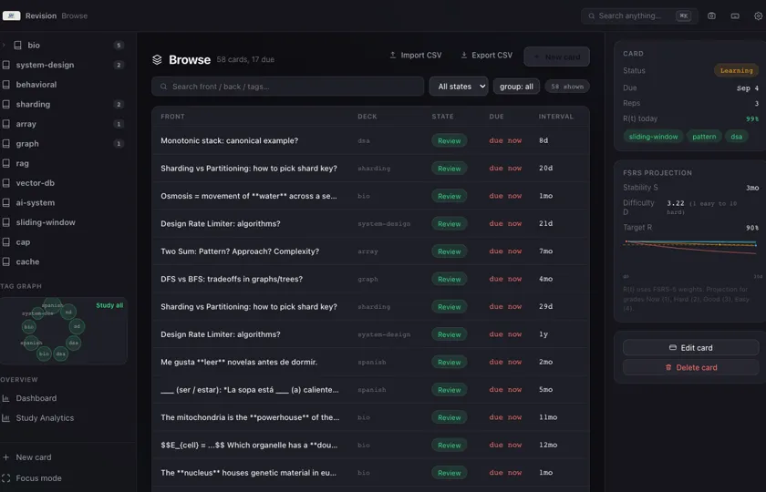
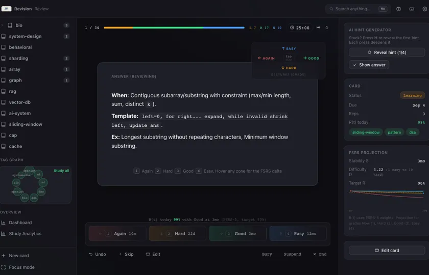

Work




Revision and Switchyard — screens from things I build and run myself.
What that produced
less research and debugging effort for 20+ teams on MCP workflows, measured across 7 pilot squads in a 4-week rollout.
case task resolution time on the Agentic Developer Platform I founded at ServiceNow.
legacy test coverage lift across seven pilot squads, in four weeks, without freezing delivery.
About
I lead all engineering at Bay6.ai: four products for regulated industries, and a team going from ten people toward twenty.
Before that I founded ServiceNow's Agentic Developer Platform: MCP servers, skills and agents that twenty-plus teams adopted in four weeks.
The half of the work I care most about is the unglamorous one. Tool contracts, evaluation gates, approval trails, and release decisions that survive an audit six months later.
Abhishek MauryaHead of AI Engineering, Bay6.ai
Writing
Notes on agent platforms, evaluation, and getting AI systems through the last mile into production.
All writingHappy to talk about agent platforms, evaluation and governance.